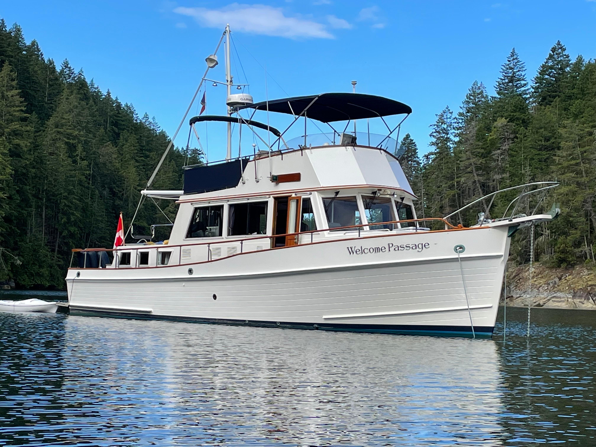

Grand Banks 42 Classic
1975–2005
The Grand Banks 42 Classic is a larger tri-cabin flybridge cruiser with two private staterooms, two heads on many examples and substantially more machinery and storage space than the 36. It uses a semi-displacement hull and twin diesel shaft propulsion. The model is intended for extended cruising with family or guests rather than compact-marina simplicity.

- Length
- 42.58 ft
- Beam
- 13.58 ft
- Draft
- 4.17 ft
- Hull behaviour
- Semi-Displacement
- Fuel
- Diesel
- Propulsion
- Shaft
- Engine configuration
- Twin Inboard
- Boat family
- Trawler
- Construction
- Fiberglass
Best for
- Couples cruising for extended periods with regular guests
- Owners needing two private staterooms and substantial stores
- Buyers comfortable managing a larger twin-diesel yacht
Trade-offs
- Higher operating, dockage and maintenance costs than the 32 or 36
- Large exterior teak areas require continuing care
- Twin engines and multiple systems increase ownership complexity
- Beam and air draft reduce access to smaller marinas and routes
Known concerns
- No model-specific concern has been promoted to B-Atlas’s evidence threshold. This does not mean the model has no age-, condition- or hull-specific risks.
Inspection focus
- Verify the exact layout, engine package, tank capacities and production-year configuration
- Inspect teak decks, cabin sides, windows and deck penetrations for moisture
- Inspect fuel tanks, exhaust systems, steering and electrical modernization
- Assess access to engines, generator and major systems before purchase
Continue researching
Related boat models
47.08 ft · Semi-Displacement
36.83 ft · Semi-Displacement
36.83 ft · Semi-Displacement
31.92 ft · Semi-Displacement
42.33 ft · Displacement
42.17 ft · Semi-Displacement
About this record
B-Atlas preserves uncertainty: missing information remains unknown rather than being treated as a negative. Specifications and guidance describe the model record; individual boats can differ by year, equipment, refit and condition.